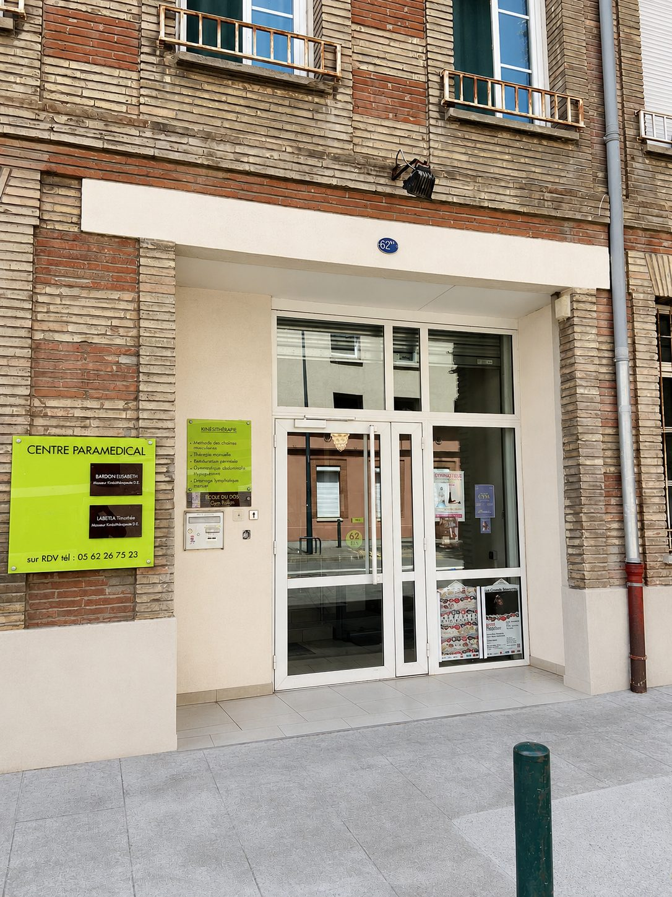

Ostéopathe à Toulouse, boulevard des Récollets
Du jeudi au samedi, au 62 bis boulevard des Récollets, à côté du métro Saint-Michel — Marcel Langer. À deux pas du Busca, de Saint-Agne et du Palais de Justice. Rez-de-chaussée, accès PMR, consultation à 60 €.

Venir au cabinet
- Adresse 62 bis boulevard des Récollets, 31400 Toulouse
- Métro Saint-Michel — Marcel Langer (ligne B), à quelques pas
- Étage Rez-de-chaussée, accès PMR
- Jours Jeudi, vendredi et samedi
- Tarif 60 € la consultation, facture remise pour la mutuelle
- Téléphone 06 43 10 54 40
Repérez bien l'entrée. L'accès se fait par la porte vitrée du 62 bis, sous le porche. Le cabinet est situé au rez-de-chaussée.

Ostéopathe dans le sud de Toulouse
Le boulevard des Récollets est l'un des axes structurants du sud toulousain, à la charnière de plusieurs quartiers. Le cabinet se trouve au cœur de Saint-Michel, à quelques minutes à pied du Busca et du Grand Rond, et à une poignée de minutes en métro du Palais de Justice, des Carmes et du centre-ville.
La ligne B dessert directement le cabinet depuis la station Saint-Michel — Marcel Langer, ce qui le rend tout aussi accessible depuis Saint-Agne, Rangueil, Empalot, Saouzelong et la faculté, ainsi que depuis Balma et l'est de l'agglomération en correspondance.
La patientèle reflète cette position : des étudiants et personnels hospitaliers du secteur de Rangueil, des salariés et professions juridiques du côté du Palais de Justice, des familles du Busca et de Saint-Agne, et des sportifs des clubs toulousains. Le samedi matin reste le créneau le plus demandé, pensez à réserver quelques jours à l'avance.
Avant de venir
Comment venir au cabinet de Toulouse en transport ?
La station de métro Saint-Michel — Marcel Langer, sur la ligne B, se trouve à quelques pas du 62 bis boulevard des Récollets. Plusieurs lignes de bus desservent également le boulevard.
Le cabinet est-il accessible en fauteuil roulant ?
Oui. Le cabinet est en rez-de-chaussée et l'accès est adapté aux personnes à mobilité réduite. Signalez-le au moment de la prise de rendez-vous, je vous accueille à l'entrée.
Depuis quels quartiers de Toulouse vient-on au cabinet ?
Le cabinet est situé à Saint-Michel, sur le boulevard des Récollets. Les patients viennent principalement de Saint-Michel, du Busca, du secteur du Palais de Justice, de Saint-Agne, de Rangueil, d'Empalot et de la Croix-de-Pierre. La ligne B du métro dessert le cabinet directement, ce qui le rend également accessible depuis Balma et l'est de l'agglomération.
Consultez-vous en urgence à Toulouse ?
Aucun créneau n'est réservé à l'urgence, mais un lumbago ou un torticolis aigu trouve le plus souvent une place sous 24 à 48 heures, du jeudi au samedi. Consultez Doctolib pour voir les disponibilités en temps réel, les annulations libèrent souvent des créneaux le jour même. Une urgence médicale relève du 15.
Quels jours consultez-vous à Toulouse ?
Le jeudi, le vendredi et le samedi. Le début de semaine, je consulte au cabinet de La Tour-du-Crieu, en Ariège. Les créneaux exacts sont visibles en direct sur Doctolib.
Le début de semaine, je consulte en Ariège : voir le cabinet de La Tour-du-Crieu.
Une douleur qui dure ? N'attendez pas qu'elle s'installe.
Choisissez votre cabinet et votre créneau en ligne pour prendre rendez-vous simplement, à Toulouse ou à La Tour-du-Crieu.